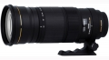

器材库 > 35mm画幅AF变焦镜头 > EX DG 120-300/2.8 APO OS HSM

详细规格
镜头类型
远摄变焦镜头
发布日期
2010-09-21
焦距
120mm-300mm
最大光圈
f/2.8
最小光圈
f/22
视角（对角）
20.4°-8.2
镜头结构
23片/18组
低/超低色散镜片
3片
光圈叶片
9片
最近对焦距离
150-250cm
最大放大倍率
0.123倍
驱动马达
HSM（超声波马达）
滤镜口径
105mm
镜头卡口
Canon EF, Nikon AF, Sigma SA
防抖
是
颜色
黑色
尺寸
114.4×289.2mm
重量
2950g
该产品暂无存档的网友点评
产品图 / 样片
适马 EX DG 120-300/2.8 APO OS HSM
评测 / 相关文章
- 详细内容 （存档）
- 适马重炮EX DG 120-300/2.8 APO OS HSM评测 （存档）
- ［试用］从328起步 适马120-300/2.8 （存档）
- ［资讯］适马EX DG 120-300/2.8 尼康版本上市 （存档）
- ［资讯］适马120-300/2.8镜头佳能卡口版本上市 （存档）
- ［资讯］适马发布三款镜头 （存档）
- ［资讯］适马发布两款单反镜头 （存档）